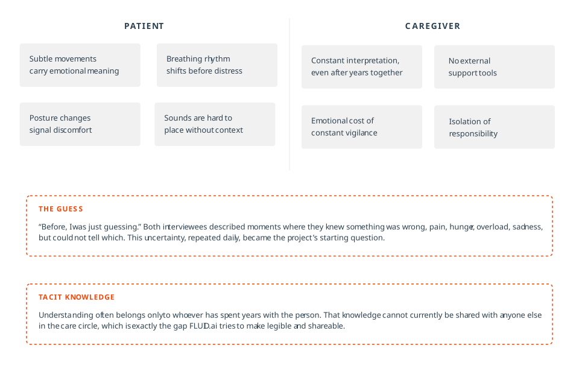
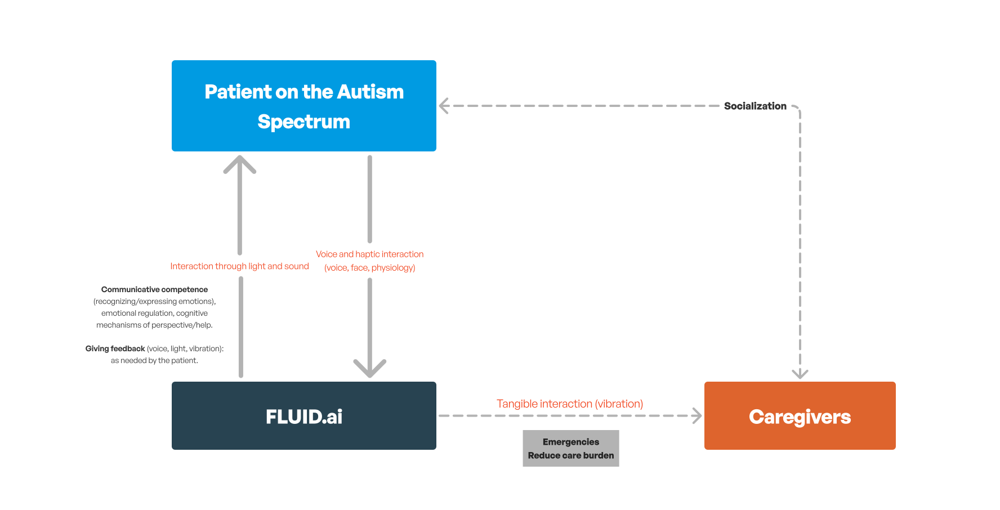
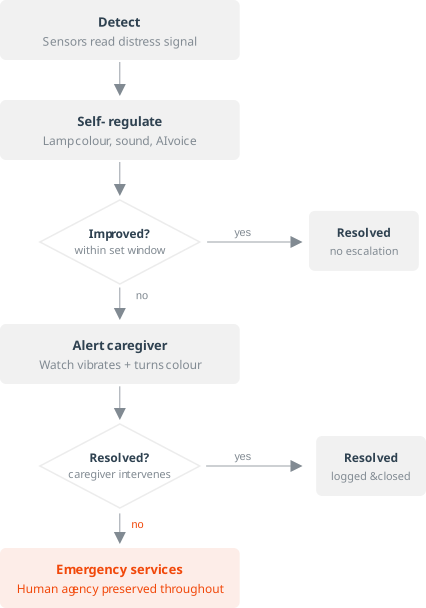
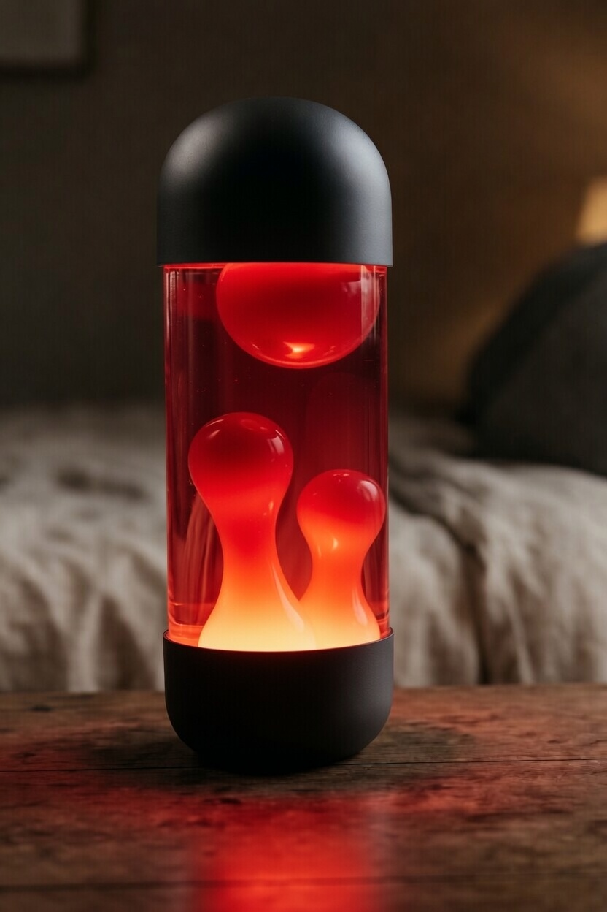
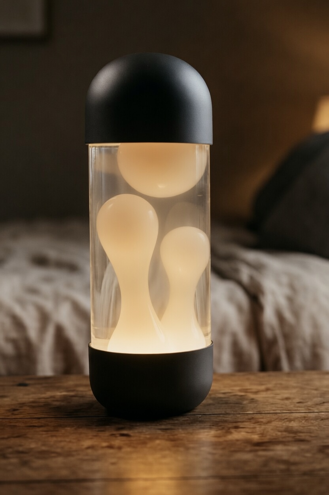
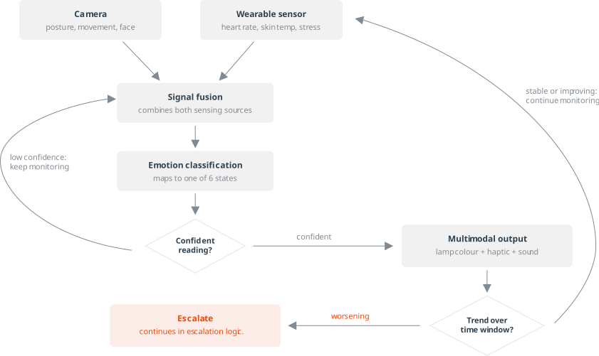
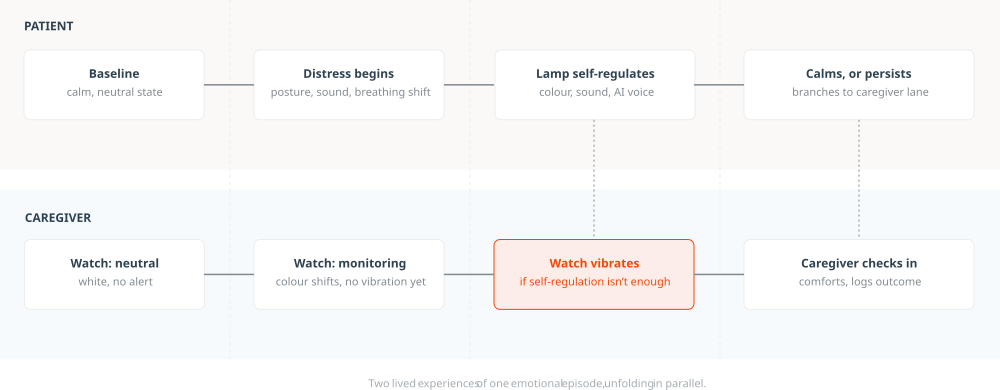

When words aren’t available, the body still speaks.
FLUID.ai is a speculative, academic concept — not a market product — built to explore how affective computing might mediate communication in caregiving relationships, rather than to prescribe a deployable solution. It is an affective computing system designed to bridge the communication gap between non-verbal autistic individuals and their caregivers. Grounded in Picard’s (1997) definition of affective computing as computation that relates to, arises from, or deliberately influences emotions, the project departs from a central premise: internal emotional states often remain invisible. As Barrett (2017) argues, emotions have no universal expressions. They are constructed in highly contextual ways.
The system consists of two connected objects: a lava lamp-inspired ambient device placed in the patient’s room, and a companion watch for the caregiver. As the patient’s emotional and physiological state shifts, the lamp responds in real time through colour, light movement, and sound. The watch mirrors these changes through colour and haptic vibration, keeping the caregiver informed without requiring constant visual monitoring.
A sensitive mediator between a non-verbal autistic person and their caregiver. Translating what the body communicates but cannot say.

The Brief
FLUID.ai was developed for Empa[s]thetic[s] AI: Communicate the Invisible Mind, the Interaction Studies and Practices brief at FBAUL, led by Professor Inês Rodolfo. The brief posed one central question: can an AI agent make the invisible constructs of the mind, emotions, sensations, or ways of thinking, visible or perceptible, and in doing so expand social, human, or ethical awareness?
It also came with a specific formal constraint: the AI agent’s representation could not be a literal humanoid or a conversational chat interface. It had to be abstract, only lightly anthropomorphic at most, or inspired by more-than-human, biotic entities, living organisms or elements of an ecosystem, such as plants, water, or rain. The work was individual, and had to be documented as a UX/UI case study following the Design Thinking process across three phases: research and ethnographic observation, definition and ideation, and prototyping.
No humanoid face, no chat window. The brief asked for something abstract or biotic instead, which is exactly why a lava lamp, an organic, living-feeling form with no face and no voice interface, was never a stretch. It was closer to what the brief was already asking for than a screen ever could have been.
The Problem
Non-verbal autistic individuals often express emotions through atypical signals: subtle movements, changes in posture, sounds, or shifts in breathing rhythm that are difficult to read, even for those who know them intimately. For caregivers, recognising distress, pain, or anxiety becomes a process of constant interpretation, carried out under pressure, with little external support.
This asymmetry creates a cycle of frustration on both sides: the person who cannot express themselves clearly, and the caregiver who cannot understand clearly. Over time, this erodes the quality of the relationship and places enormous emotional weight on those who provide care.
Non-verbal or minimally verbal
Of 8-year-olds with autism meet criteria for “profound autism”, defined as non-verbal, minimally verbal, or having an IQ below 50. CDC, Public Health Reports, 2023.
Higher odds of stress
Autism caregivers report significantly higher stress than caregivers of non-autistic individuals. eClinicalMedicine (The Lancet), 2023.
Higher odds of anxiety & depression
Clinically diagnosed anxiety and depressive disorders are markedly more common among autism caregivers. Same cohort study, 2023.
① Research
Ethnographic Interviews
To ground the project in lived experience, I conducted two ethnographic interviews with people who interact daily with non-verbal users: a pedagogy student who accompanies a nine-year-old child with cerebral palsy at school, and the sister of a non-verbal autistic adult. Both interviews focused on daily communication patterns, moments of uncertainty, and the emotional cost of interpretive ambiguity.
Two interviews is a small sample — enough to surface real patterns and shape design decisions at this scope, but not enough for statistical validation. The insights below should be read as directional, not conclusive.

What they told me
Even after a year and a half of being with him every day, many signals still depend on contextual interpretation. Before, I was just guessing.
— Pedagogy student, accompanying a 9-year-old with cerebral palsyRecognising emotions requires intense attention to the body: rhythms, sounds, shifts in posture. And even then, sometimes the meaning stays uncertain.
— Sister of a non-verbal autistic adultBoth described moments where they knew something was wrong but could not identify whether it was pain, hunger, sensory overload, or sadness. This uncertainty generates anxiety and frustration, because the response depends on reading signals that are often invisible to anyone else. They also noted that only people with long-term proximity know how to interpret certain cues, which isolates the responsibility of care and makes it impossible to share that knowledge with others.
Key Insights
Empathy is not about recognising emotions. It is about creating conditions for the human to exist fully within the technology. The AI’s role is not to replace human care, but to reduce the caregiver’s emotional load and make their knowledge shareable.
The biggest challenge is not identification, but intervention: deciding how, when, and how far the technology should act without overstepping. FLUID.ai knows its limits and escalates to human intervention when needed.
Multimodality is essential. Combining visual, haptic, and sonic stimuli creates a more gradual and less invasive reading of emotional states, respecting different sensory sensitivities.
Colour and rhythm are language, not decoration. Chromatic codes linked to emotional states are not labels but a translation system between two different emotional worlds.
② Ideation & Scope
Narrowing the scope
The brief asked a deliberately broad question: can an AI agent make the invisible constructs of the mind, emotions, sensations, ways of thinking, visible or perceptible? Read literally, that opened the door to any non-verbal patient, not only autistic individuals, but also people left non-verbal by conditions such as a cerebral ischemia, aphasia, or other acquired communication loss.
I chose to narrow that scope to non-verbal autistic individuals specifically. Trying to design for every cause of non-verbal communication at once would have flattened very different lived experiences into one generic profile, and made every downstream decision, from the ethnographic questions I asked to the sensory calibration of the system, vaguer than it needed to be. Focusing on one population let the research actually sharpen the design, instead of just broadening it.
Exploring the object
Before settling on an ambient lamp, I considered two other form factors, each rejected for a reason specific to this population rather than a generic design preference.
Watch
Placing the primary device on the patient’s own body risked the same tactile sensitivity many non-verbal autistic individuals experience with wearables, and a wrist-worn object can’t fill a room with ambient colour and light the way the space itself needs to communicate.
Sensory rug
A rug only registers something when it’s physically stepped on or touched, which makes it reactive rather than ambient. It couldn’t hold a continuous, passive presence in the room, or mirror its state to a caregiver’s watch the way an always-visible light source can.
The lamp won for the opposite reasons: it asks nothing of the patient’s body, it’s always present in the room without demanding attention, and its light can be seen, felt as warmth, and mirrored remotely, all at once.
③ Design Principles
Three commitments crystallised out of that exploration, and shaped every decision from there on, through the colour system and the escalation logic.
④ The System
Two connected objects
The choice of a lava lamp as the primary interface was not aesthetic — it was conceptual. The slow, organic, repetitive movement of the lamp’s internal fluid creates a visual metaphor for emotional states: expansion and retraction, calm and agitation, flow and stillness. This behaviour communicates without requiring complex interpretation, making it legible even to someone with limited verbal comprehension.
The lamp is grounded in Anna Vallgårda’s (2013) understanding of computational artefacts: objects that take form through the relationship between physical form, temporal form, and interactive gestures. FLUID.ai is not just a functional tool. It is an emotional mediator that creates conditions of safety, calm, and mutual understanding.
The system infers emotional state from two sensing sources: a camera reads posture, movement, and facial cues, while a wearable biometric sensor tracks heart rate, skin temperature, and stress markers. Together they form the layer beneath every colour, vibration, and sound decision described below.


Multimodal interaction
The system communicates across three sensory channels simultaneously, calibrated to different sensory tolerances and contexts of use.

Escalation logic
One of the core principles of FLUID.ai is knowing its own limits. The system follows a clear escalation model: it first attempts autonomous self-regulation through sound and colour; if the patient does not improve, it alerts the caregiver; if the caregiver cannot resolve the situation, it contacts emergency services. At every step, human agency is preserved.

The caregiver’s app has access to everything the sensors capture — heart rate, skin temperature, and inferred levels of stress, anxiety, and calm. What the project doesn’t resolve is how consent works when the person being monitored can’t verbally agree to it. That’s a real ethical gap in the concept, not a solved one, and any future iteration would need to address it before this could move past speculative design.
⑤ Emotional Colour System
The colour system was built at the intersection of two references: Plutchik’s Wheel of Emotion, which maps the intensity and variation of emotional states, and Eva Heller’s psychology of colour, which links specific hues to felt sensations and affective associations. Rather than reproducing rigid colour schemes, the system is softer and more situated: each colour, or transition between colours, expresses not just an emotional state, but its intensity, urgency, and need for intervention.
Colour becomes a translation system between two emotional worlds: the patient who cannot speak, and the caregiver who needs to understand. It is language, not decoration.
Red — Distress
Pain, intense agitation, or crisis. High urgency. The lamp shifts to saturated red; the watch vibrates and alerts the caregiver immediately.
Orange — Anxiety
Emotional activation, stress, or discomfort. The lamp turns orange; the watch mirrors the colour. Self-regulation begins: calming sounds and light patterns.
Yellow — Improving
Emotional state shifting toward calm. The lamp transitions from orange to yellow; the watch notifies the caregiver that the patient is getting better.
Blue — Sadness
Low emotional state, withdrawal, or grief. Slow, cool light movement. System shifts to softer audio stimuli.
White — Neutral
Stable state or initial connection. Soft white glow, slow movement. The system is active and monitoring, but no intervention needed.
Gold — Joy
Positive emotional state. Warm, bright light with gentle movement. The system reflects the patient’s wellbeing back into the room.


⑥ Process
Choosing the object
The decision to build around a lamp, specifically a lava lamp, came from a question the research kept returning to: what physical object could carry emotional meaning without demanding interpretation? The lava lamp’s internal movement, fluid rising and falling in slow, continuous cycles, offered a ready-made visual vocabulary for emotional rhythm. Heating and expansion became metaphors for distress; cooling and retraction for calm.
The form was then refined: rather than a traditional triangular lava lamp, the object needed softer edges and space for a speaker, through which the AI communicates with the patient via voice and sound. Several sketches explored this balance between the lamp’s organic form and the functional requirements of speaker placement.

Wireflow and user flow
The interaction model was mapped through two parallel documents: the conceptual wireflow (the system’s decision logic, from emotional detection to escalation) and the user flow (the lived experience of both the patient and the caregiver across an emotional episode). These became the backbone of the interface design. Every screen, every vibration pattern, every colour transition was derived from them.


Design system
The interface system uses General Sans across all touchpoints, a rational, clean typeface that contrasts with the organic emotionality of the lamp’s physical form. The design system maps emotional states to colour values, icon sets, and haptic patterns, creating a consistent visual language across the lamp interface, the watch display, and the onboarding flow.
Interface screens
The onboarding flow connects the caregiver’s watch to the FLUID.ai lamp, establishes the patient’s profile, and calibrates the emotional sensitivity thresholds. The watch interface uses the same fluid graphic language as the lamp, with colour as the primary information layer and vibration as the secondary alert.
⑦ Key Outcomes
⑧ Reflections
FLUID.ai clarified something I had only intuited before: designing for vulnerability is, inevitably, an ethical act. Every decision, which colour represents anxiety, how long the system waits before alerting the caregiver, what the lamp does when it doesn’t know what’s wrong, carries a moral weight that aesthetic choices alone cannot resolve.
The project also deepened my understanding of what affective computing actually demands. It is not about making technology emotional. It is about making technology aware of emotion without flattening it. Emotions, as Barrett (2017) argues, are not universal expressions waiting to be decoded. They are constructed, contextual, and relational. A system that forgets this will misread more than it reads.
One of the most important outcomes was the recognition of FLUID.ai’s own limits. The system is designed to know when it is out of its depth, and to hand control back to the humans who carry the care. That humility is not a weakness. It is the most responsible thing the technology can do.
Test the colour and movement system directly with non-verbal autistic users and their caregivers, under real conditions, not just in research contexts. The interpretive gap between design intention and lived experience can only be closed by being in the room. I would also explore how the system learns and adapts over time, rather than operating on fixed emotional mappings.
© ellen damazio, 2026 — designed & coded